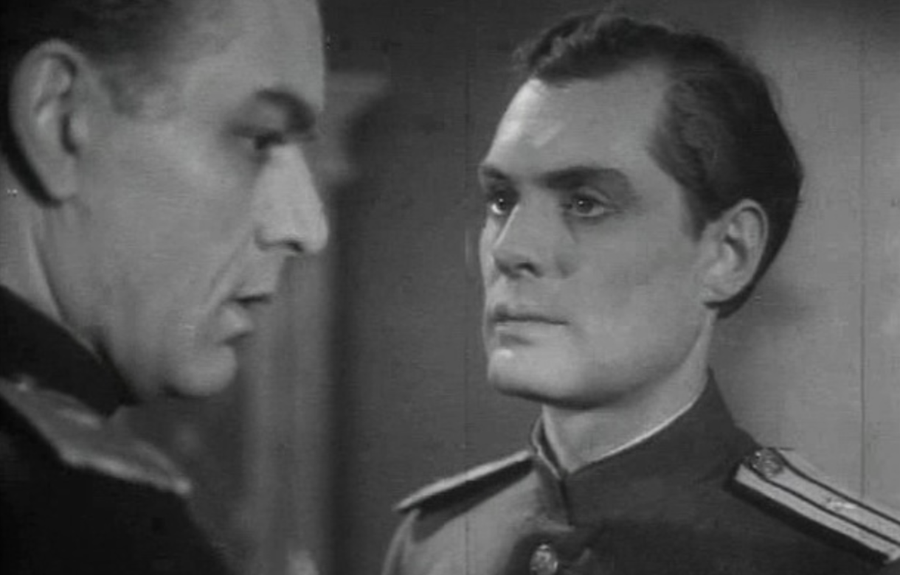

Western spy films present espionage as cosmopolitan adventure—filled with moral ambiguity, sexuality, violence, and international mobility. Soviet agent films frame espionage as serious ideological service, often focused on maintaining political control and stability within the Soviet sphere rather than celebrating global adventure.
| Feature | Western Spy Film | Soviet Agent Film |
|---|---|---|
| Moral Framework | Often morally ambiguous. The spy lies, manipulates, and sometimes betrays allies in order to accomplish the mission. | Morally clear and ideological. The Soviet agent represents the just cause of the socialist state; ambiguity is minimized and loyalty is emphasized. |
| Hero Type | Charismatic, individualistic, sometimes rebellious. The spy may challenge authority and operate independently. Example: Richard Hannay in The 39 Steps. | Disciplined, restrained, and loyal to the collective mission. Personal ego and fame are suppressed. Example: Major Fedotov in Secret Agent. |
| Sexuality | Sexuality is a prominent narrative element. Seduction is frequently used as a spy tactic; romantic and erotic encounters are common. | Sexuality is minimized or absent. Soviet agents rarely use seduction; personal relationships are subordinated to ideological duty. |
| Geography of Espionage | Strong emphasis on international travel. The spy moves across glamorous global locations—London, Paris, Istanbul, Caribbean islands—reinforcing the cosmopolitan adventure narrative. The spy genre is a British invention and overseas colonial locations feature prominently in Western films (Britsh and American, who inherit the genre model) | Espionage is often connected to internal security or imperial control. Agents frequently monitor and suppress dissent within Soviet or Soviet-controlled territories rather than travel for glamorous missions abroad. |
| Violence and Action | Frequent physical confrontation: gunfights, chases, assassinations, explosions. Violence functions as spectacle and excitement. | Violence is restrained and rarely spectacular. Emphasis is placed on patience, intelligence gathering, and psychological maneuvering. |
| Narrative Style | Fast-paced, visually spectacular, gadget-driven plots with exotic settings. | Slower, dialogue-driven, focused on psychological tension and strategic planning from the center (Moscow). |
| Ideological Message | Primarily entertainment; ideology is secondary to adventure and spectacle. | Strong ideological function emphasizing loyalty, sacrifice, and protection of the socialist state. |
